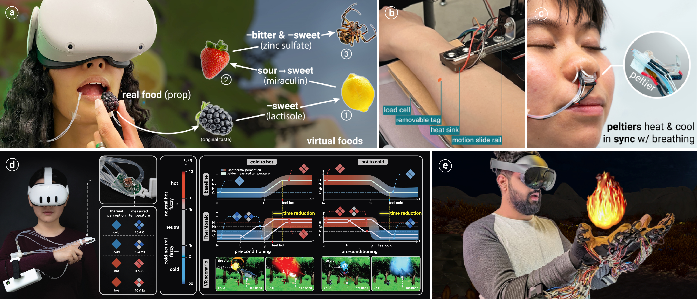
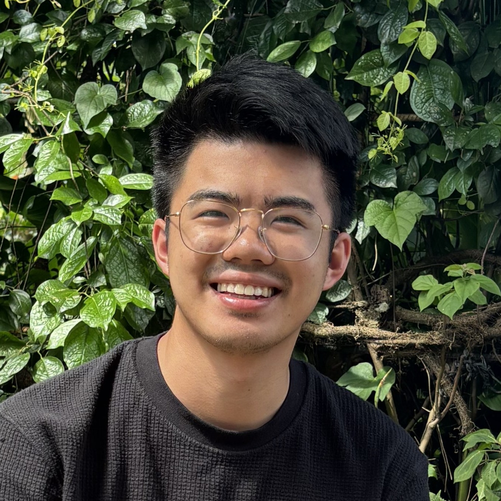
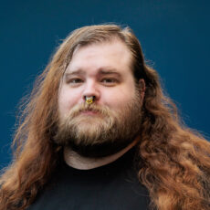

UIST 2026 WORKSHOP
Generative AI to Advance Multisensory Interfaces. How might AI support the authoring, prototyping, personalization, and evaluation of sensory feedback that is hard to describe, simulate, or standardize?

Immersive experiences are increasingly moving beyond conventional vibrotactile and force-based feedback toward multisensory interaction. Researchers in the UIST community have explored how modalities including temperature, taste, smell, and airflow can enrich virtual experiences, embodied interaction, accessibility, and human perception.
Yet designing, authoring, and evaluating these experiences remains challenging. Unlike visual or auditory media, sensations such as warmth, smell, taste, or pain-adjacent feedback are difficult to describe, reproduce, and standardize. They depend heavily on individual perception, physical context, hardware constraints, and safety considerations, while suitable datasets and shared representations remain limited.
This workshop examines the intersection of generative AI and nontraditional haptics. We ask where AI can meaningfully support the creation and evaluation of multisensory feedback, as well as where its limitations and risks remain. The workshop will identify needs for design vocabularies, authoring tools, datasets, evaluation methods, safety guidelines, and future research directions for AI-mediated multisensory interfaces.
Round-table introductions, followed by a 20-minute keynote by Prof. Craig Shultz and a 10-minute Q&A.
Tables rotate through demo stations centered on thermal, taste, smell, airflow, and other nontraditional modalities (~15 minutes each).
Demo stations remain open so participants can revisit them informally.
Discussion of how generative AI can support multisensory interaction research, where its current limitations and risks lie, and which tools, datasets, vocabularies, and evaluation methods are still missing.
Each table presents its brainstorming results; organizers facilitate a synthesis of recurring themes, open research questions, and possible community-level resources.
Identification of concrete next steps, including research questions, collaborations, shared datasets, demo repositories, and evaluation guidelines for AI-mediated multisensory interfaces.
University of Illinois Urbana-Champaign
Assistant Professor of Electrical and Computer Engineering at the University of Illinois Urbana-Champaign and co-founder of Fluid Reality, developing interactive embedded systems, spatial haptics, and high-performance actuation for XR and robotics.
University of Maryland

University of Texas at Dallas

MIT CSAIL
University of Texas at Dallas
City University of Hong Kong
University of Maryland
Researchers and practitioners across haptics, multisensory interaction, AI-assisted design, physiology, and immersive experiences are welcome. No position paper or additional submission is required. Participants are also welcome to bring a hands-on multisensory demo to share during the workshop.